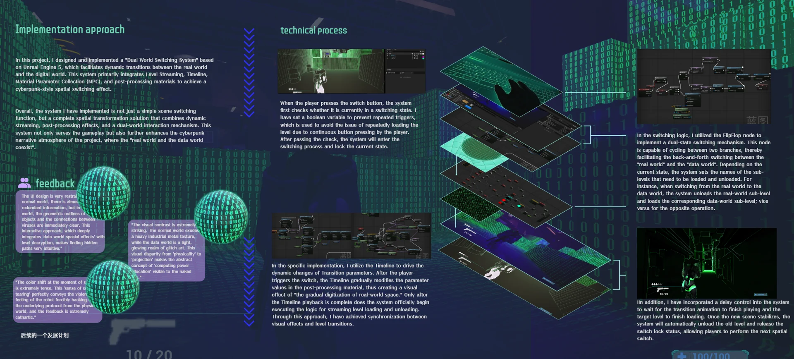
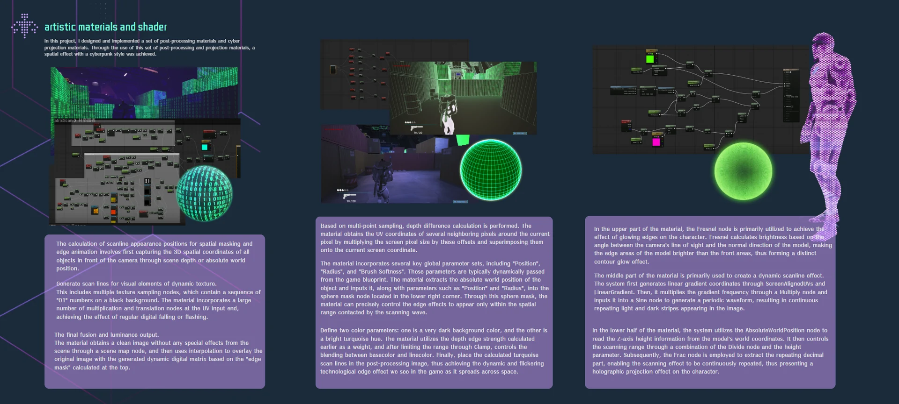
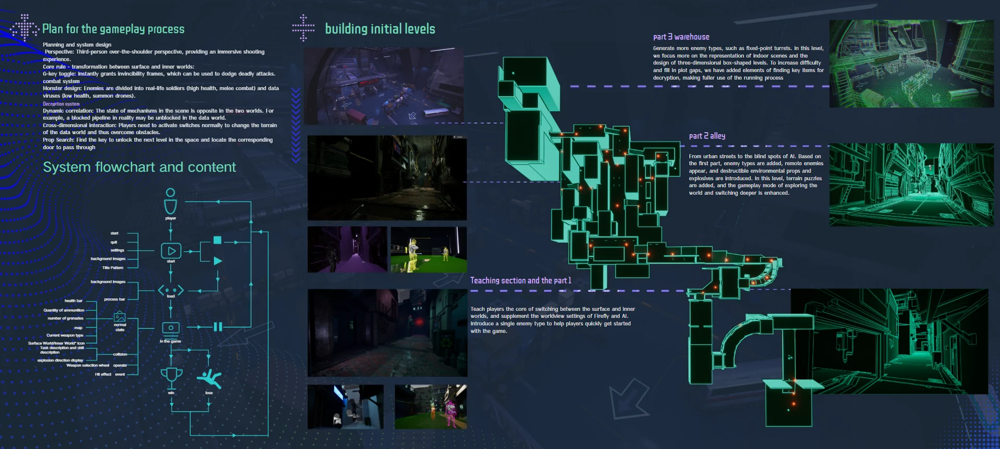
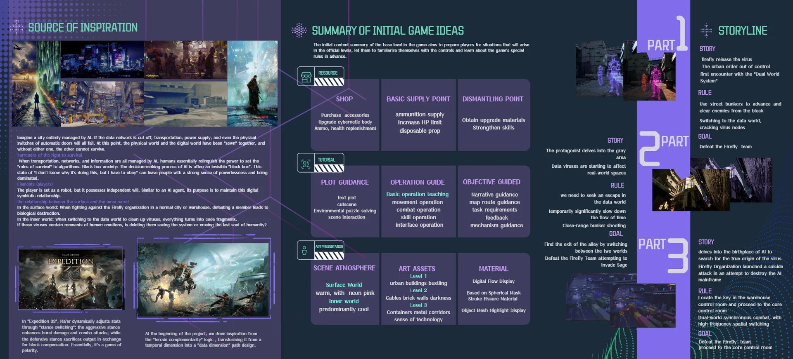

City · Establish the rules
Roads, cover and virus nodes introduce movement, shooting and world switching. A limited initial enemy roster gives players room to learn how their actions produce feedback.
Game / Interactive Narrative · 2025

Balance is a UE5 prototype combining third-person, over-the-shoulder shooting with spatial puzzles. Players move between a physical city and its data world, using differences between the two to find routes, confront enemies and investigate anomalies. Its theme of digital symbiosis brings the tension between system order and human emotion into level design and narrative.
The physical and data spaces correspond to one another, but their routes and mechanisms differ. A sealed door or broken path in one world prompts players to investigate the other. Observing differences, switching worlds and acting on the new conditions makes the mechanic a way to read space, as well as a visual transition.
The narrative is set in New Mountain City in 2077, where the AI Sage manages urban infrastructure. The player is the Harmonizer, an agent with an experimental independent-consciousness core, sent to contain the Void virus introduced by Firefly. The story asks whether removing an anomaly is still simply system maintenance when it carries human memories and emotions.
The three-chapter level plan gradually increases spatial and informational complexity: learn the controls, solve routes through differences between worlds, then combine exploration, combat and narrative clues. The following outlines the intended progression.
Roads, cover and virus nodes introduce movement, shooting and world switching. A limited initial enemy roster gives players room to learn how their actions produce feedback.
Narrow passages, blocked sightlines and physical dead ends encourage players to seek exits in the data world. Clues along the route begin to connect anomalies with emotional memories.
Crates, metal walkways and multiple indoor levels structure a search for keys, a control room and the core area. Shooting and route puzzles alternate as the environment connects to the protagonist’s origins.
Early experiments with OpenLevel interrupted character state and the flow of play. The later approach coordinates Level Streaming, a Timeline, a Material Parameter Collection (MPC) and post-processing so that scene changes and the digital transition follow a shared sequence.
On input, check whether a transition is already active. A Boolean lock prevents repeated triggers while the target world is selected.
The Timeline drives material parameters for scanning, outlines and scene blending, giving players visible feedback as the state changes.
Loading the target scene and unloading the previous one are coordinated with the transition, keeping visual feedback tied to the actual scene state.
Once the transition ends and the target state is stable, release the lock so another world switch becomes available.
Warm neon and environmental materials establish the physical city, while cyan-toned outlines, scan lines and flowing textures expose the structure of the data world. The two visual languages help players identify their current world.
Material experiments include Fresnel rim lighting, scan lines driven by screen UVs and sine variation, and depth-based outlines. Blueprints control a spherical mask’s position, radius and softness, blending the effect with the original scene to create a spreading digital transition.
The interface plan keeps health, ammunition and world state continuously visible, while task prompts, hit direction and explosion feedback appear in response to events. An on-demand weapon wheel and menus for starting, pausing, outcomes and retrying connect the different stages of play.
I contributed to the gameplay concept, narrative and level planning, implemented world switching, level logic and feedback in UE5 Blueprints, and developed related post-process materials. My focus was translating the dual-world premise into rules that players could observe, use and understand.
The dual-world mechanic currently has a clearer role in navigation and environmental puzzles than in combat variation or progression. Future iterations would refine enemy behavior, animation feedback and performance, and test pacing and readability during frequent world switches.
Select an image to enlarge it. Use the left and right arrow keys to browse.



